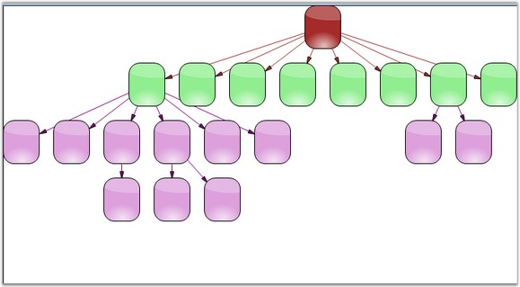
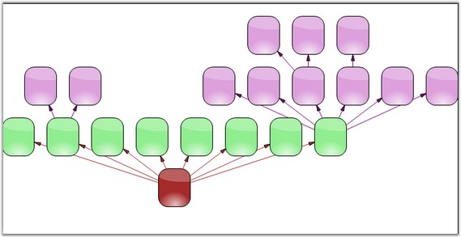

HierarchicalLayoutManager arranges the nodes in a hierarchical fashion depending on the parent-child relationship. Unlike the directed tree layout, more than one parent item can be defined for a child. It includes the following parameters.
· Model: specifies the Current Model
· RotationDegree: specifies the angular orientation of the tree
· VerticalOffset: specifies the vertical distance between adjacent nodes
· HorizontalOffset: specifies the horizontal distance between adjacent nodes
The following code example illustrates how to create the HierarchicalLayoutManager programmatically.
|
[C#]
this.DiagramWebControl1.LayoutManager = new HierarchicLayoutManager(this.DiagramWebControl1.Model, 0, 25, 30); |

Figure 21: Top-to-Bottom Hierarchical Layout

Figure 22: Bottom-to-Top Hierarchical Layout
See Also
Table Layout, Directed Tree Layout, Graph Layout, Subgraph Tree Layout, Radial Tree Layout, Symmetric Layout, OrgChart Layout, Updating the Layout